| Match Report - 09 April 2011 |
|
|
|
|
|
|
|
|
U6 Green
8 - 3
|
|
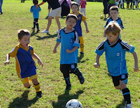
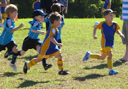
The sun was gleaming down on the U6 Green @ Holy Cross fields and the enthusiasm
was equally as bright amongst the team. The team are working well at improving
their foot skills and listening to the directions from their coach Peter. There
was an early goal by Christian which certainly took the Panthers by surprise and
this was followed by another from Blake. The Panthers responded with a great goal
and at half time the both teams were evenly matched.
A special note goes out to Will H who was awesome in attack feeding the ball
through to his team mates and also in defence as he saved several break through
runs by the Panthers that allowed the team to stay in front.
After the half time fruit,drink and discussion the team responded with some great
plays: Jasmine scored 3 great goals, Elijah continued his streak with another
goal in honour of his little brother's 2nd birthday. Christian and Blake securing
another goal each in the second half. Well done everyone and thanks to all the
family and friends for your support on the sidelines. Player of the week was
awarded to Jasmine after kicking her trifecta.
- Sarah Robson
|
|
|
|
U6 Purple A
3 - 9
|
|
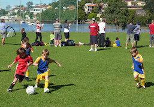
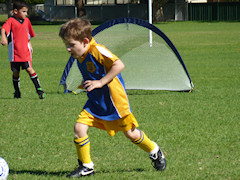
It was a hot and beautiful day at Morrison Bay when the boys of Purple A took to
the field full of energy and enthusiasm. This week though the focus was on defence,
defence, defence as the Putney Rangers were faster and stronger and taking the
ball up to the goal on many occasions which was reflected in the halftime score
of 0-4 against.
The halftime pep talk from coach Tim had everyone ready to go again and although
the opposition went in a few more times the boys were persistent and finally
rewarded with a great goal by Eli. There was almost a monumental comeback as
the goal kick re-starts resulted in 2 more goals immediately after, firstly by
Alex and then by Cameron. It looked like Liam and Lachlan were going to continue
the trend but the Rangers managed to break the pattern and get the ball away from
their goal and put the ball in for a final goal and score of 3-9.
All in all the boys enjoyed the game and are really starting to be a great little
team!! Congratulations to Alex who was Player of the Match this week for great
defence, great persistence and a great goal!!!
- Justine Stehn
|
|
|
|
U6 Purple B
|
|
What another great week this week at soccer. Lots of great big kicks, and even
some great passing happening. Sean had a great game this week and received the
player of the match trophy and Georgia took home the certificate of the week
for trying her best.
Great work team!
- Meryl Aldous
|
|
|
|
U6 Red A
0 - 7
|
|
Our first match of the season started out on a beautiful, but far too early,
morning. The dew on the grass didn't dampen the kids’ enthusiasm to start their
match. After a great kickoff, we discovered the Ryde Saints were serious,
scoring their first goal in the opening minutes of the game.
Unfortunately this continued, the Saints having a couple of very good boys
playing some impressive soccer, particularly their blonde haired player. Ollie
was playing some impressive defence at the end of the first half, but the score
was 5-0 at that point.
Lenore gave an inspiring speech half time speech to the boys, and they set off
all fired up for the second half. Ben played a great game, nearly scoring a goal
with an aggressive attack, and also clearing the ball in defence.
All the boys played a fantastic first game, but the trophy for this week went
to Ollie, after a great match.
For our first game, I was really impressed by the boys, and I am sure we will
look forward to even better matches for the rest of the season. The score was
a hard fought 7-0 in the end, with the Ryde Saints victorious.
- Craig
|
|
|
|
U6 White A
1 - 0
|
|
Great game by our young team today at Magdala Oval who played exceptionally well
versus a worthy opponent in Holy Cross. The kids were energetic against an evenly
matched opponent and played sensationally considering they did so with only one
reserve.
An early goal to Daniel put us in the lead, a lead which our kids held till the
full time whistle! We were unlucky not to score an additional 4 to 5 goals with
some attempts at goal coming painfully close.
We done kids, enjoy your break from School Holidays. Hope the Easter bunny is
kind to you.
- Paul Felice
|
|
|
|
U6 White C
0 - 9
|
|
On a wonderful autumn morning at Morrison Bay the Koala’s played the Sharks and
lost 9-0. Jack, Will, Ryan, Kurt and Dylan had a great game kicking the ball and
enjoying the sunshine!
- Lisa Mach
|
|
|
|
U7 Green
3 - 3
|
|
What a change from our first game, Holy Cross got off to a good start with 3
quick goals. It wasn’t long until the boys wanted more ball and pressured
Holy Cross for control. A great pass from Lucas to Luke set up our first goal
leaving it at 3-1. We were in again with Alex scoring again shortly after half
time. The boys showed some great skills with pull-unders and taps they had
learned at training. Wonderful support in the backs from Jayden and Dillan.
Jay and Will both contributed with some great kicks in play and eagerness
to get control of the ball. Bailey scored a wonderful goal putting the score
at 3 all. A wonderful effort from all of the boys by not only keeping the
Holy Cross team scoreless in the second half but scoring 3 great goals.
Player of the match - Lucas (for a great pass and helping with a team goal)
- Marc van Hilten
|
|
|
|
U7 White A
8 - 0
|
|
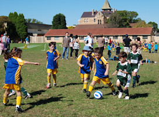
The U7 White A's showed their true sporting colours today by taking turns to swap
the blue for green and helping out Ryde Saints who were short a player. Well done
guys.
The score was still locked at nil-all at half time today but after a much needed
rest and plenty of watermelon North Ryde stepped up and continued their dominent
display of soccer to win the match 8 - 0. Everyone played their part today with
Matthew showing super skills in defence, Hayden added to his goal tally with
another 4, Cameron scored 2 and first time goals to Joshua and Loki. Emily and
Isaac produced great attacking skills and it is only a matter of time before
they are adding their goals to the tally.
But Loki! What a game. For a boy playing up an age, his 'Go get-em' attitude saw
him mixing it with the big boys and he excelled for both teams today. Always in
the action and with a great big grin on his face it was a pleasure to see him
get his first goal. What a CHAMP.
- Kirrilee
|
|
|
|
U7 White C
4 - 3
|
|
We were presented with a beautiful autumn morning for our second game of the
season and after last weeks win the boys have had a taste of glory and were
keen to get started!
Their defence was brilliant and they were on top of the ball the entire game.
It was abit of a nail biter at the end but the boys held out till that last
whistle, never tiring in that hot autumn sun!
Their great team work and FAIR sportsmanship supplied them with a very deserving
win. Well done Boys!
- Susie Manning
|
|
|
|
U8 Brown
3 - 2
|
|
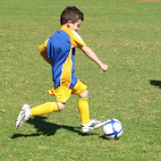
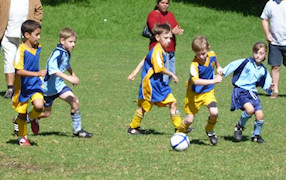
The teams first game out of area, and only 1 reserve available on this sunny
Saturday. The game started well with David umpiring and the team definitely
well matched with Roselea who scored the first goal.
Isaak made a break away and scored a picture perfect goal to even things up
the heat was certainly a test for the team, Brooklyn did well in the goals
and a well earned break for all at half time for a drink.
The second half John took over for umpiring and it wasn't long before Ben
scored a great goal and Issak made save after save from the Roselea attack
- Great work Isaak.
Two minutes before full time Roselea scored and the score was 2 - 2 and in
the final seconds Brooklyn managed to convert a great series of plays into
the winning goal. Great team work and endurance this week. Player of the week
was awarded to Brooklyn.
- Sarah Robson
|
|
|
|
U8 Orange
6 - 4
|
|
Another convincing result for the boys after a 6-1 win the previous week. Tricky
Trickster Sean looked like he'd put his boots on the wrong way round with his great
pull backs and back heels while Annirudh picked up where he left off from his man
of the match performance last week, getting heavily involved in the fierce tackling
that was evident right across the park. Crazy man Finn was ... well, crazy. As was
Evan, really. And Will. In fact all the boys were crazy, covering lots of ground
and playing some great football. Will, Rishi, Hamish and Sean all played outstandingly
in their stints in defence, with great distribution and bringing the ball out into
space. And what can you say about Man of the Match, Kevin? He was Man of the Match.
Oh, and he tackled his pants off and scored a goal. Good on ya Kev!
It was good to see the boys starting to look around and see space and options in
this game and decide for themselves what to do and where to position themselves.
Remember boys, get your heads up - if you don't you can't decide whether to dribble,
pass, shoot or have a quiet sit down with a nice cup of tea.
- David Hurst
|
|
|
|
U8 Yellow
2 - 1
|
|
After a tight, but convincing win against the FC Redbacks last week, the team
was looking forward to this week’s match, way out in the Hills. The opponents,
West Pennant Hills Cherrybrook, otherwise known as Cherrybrook. The team was
brilliant, again, with most play for the first half dominated by North Ryde well
inside the opposition’s territory. Despite three or four fantastic corner kicks
and opportunity to send the ball into the net it was not to be. North Ryde were
clearly more dominant, but with only a few minutes to go before half time,
Cherrybrook managed a run against the play to score the first goal of the match.
A few minutes later half time is called. The score is one nil in favour of the
home team, Cherrybrook. The teams take a well earned break and recover with
some substance and plenty of drink. In addition, the parents from North Ryde
provide lots of encouragement and offer up a few strategies to help turn the
score line around for the second half.
Come the second half, Kate takes over as goal keeper from Patrick. Both did a
fantastic job. Harry, Damien, and Anuj are moved to forward attacking positions,
whilst Elliot moves from his previous defensive position to mid field, as does
Damien. Fletcher and Chris now move to defence from their forward positions during
the first half. The whistle blows and play begins with North Ryde producing a few
unique manoeuvres to get the action happening inside the opposition's territory.
Play continues at a frantic pace with the plenty of attacking and defending from
both teams. Cherrybrook appeared to be much stronger and very difficult to contain
this half. The break must have been good, they were on fire. However, North Ryde
was not going to surrender and continued to soldier on. A few minutes in, and
North Ryde were again on the attack and set up several brilliant plays that saw
Damien hammer home the equaliser. With renewed hope, the team’s spirits lift.
North Ryde begins to dominate proceedings once again. However, about now, play
starts getting a little rough. The referee calls time out and addresses both
teams on the importance of fair play. Play resumes, and fifteen minutes into the
second half Chris scores. Five minutes to full time, Cherrybrook pick up the pace
and push well into North Ryde territory on a number of occasions. The attack is
relentless, but North Ryde’s defence proves to be impenetrable.
Full time score North Ryde two (2) and Cherrybrook one (1). North Ryde goal
scorers: Damien Granet, Christopher Watt.
- David Watt
|
|
|
|
U9 Division 1
0 - 6
|
|
A beautiful Saturday morning saw the team out at Kenthurst ready to take on
Kenthurst & District SC. The team knew they were facing one of the top teams
in the draw and were ready for a challenge and what a challenge it was.
The opening moments of the game saw Kenthurst score straight away and for
North Ryde the game became all about the defence.
First half Blake was in goals getting in some great saves under constant attack
from the opposition. The team was really tested, playing on the larger field and
trying to maintain their positions, under relentless pressure from Kenthurst.
Second half saw Jarrod in goals working hard and making some terrific saves
against a never ending attack. Aden and Ethan held onto defence. Jay, Luke M,
Ben B and Benjamin had their work cut for them in midfield, doing their all out
best to turn the play round, while Luke A, Daniel and Ronan had some great
breakaway moments taking play back to Kenthurst and trying to keep it there.
It was a challenging game for the team and even though they didn’t walk away
with a win, they certainly took away a great learning experience which can
never be undervalued.
Once again boys thanks for a great game as parents we watch you all with pride
and pleasure. Your teamwork and sportsmanship is always to be commended win or
lose. Player of the match was Daniel.
Looking forward to next Saturday.
- Shareen Shepherd
|
|
|
|
U9 Division 3
0 - 3
|
|
Second game was against West Ryde Rovers at North Epping School. The venue caught
a few of the players and their families out and we almost had to start a couple
down but luckily there was a little delay on the game before us and we got everyone
there including two reserves.
A warm day meant it was tough going out there on the pitch and the teams looked
pretty evenly matched with plenty of great play from both sides. The boys looked
good, perhaps a little slowed down by the heat but they were managing to string
some good passes together and were looking for their team-mates. Unfortunately
this was not getting all the way to the opposition goals and goals were eluding
us. Fortunately this was also the case for the opposition until at about 16 minutes
into the half they did manage one against us. Kaiden was struggling a bit with his
leg and needed resting early but the boys were definitely still well in the game.
Half time and the boys looked hot and tired, much more than last week.
The second half proved a bit tougher and the opposition didn't seem as tired as
our boys. Unfortunately this was reflected on the scoreboard with a goal 5 minutes
in against us and another scrappy one kicked out of keepers hands at the 10 minute
mark. The guys didn't give up though and still looked like they could get one or
two back - unfortunately it didn't come off and they were to remain scoreless.
They all played well but didn't have things fall into place. Probably realised
some areas to concentrate on in training but certainly no shortage of skills from
the boys. Raphael was awarded the certificate for the game and didn't stop running
the whole game and Arlen was awarded the certificate for game 1 since it wasn't
available last week.
Final Result: West Ryde Rovers 3 defeated North Ryde 0 Hopefully next week we'll
come back strong and see the results favour us.
- Darren Mason (Manager)
|
|
|
|
U11 Division 1
5 - 0
|
|
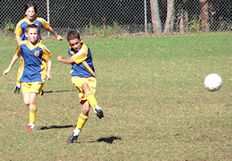
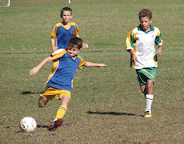
The Div One's produced another spectacular and action-packed bit of magic on
the distant grounds of Hayes Park in Galston this morning. An attacking field
formation paid dividends within seconds of the game starting and it wasn't long
before the team opened their account against their Hills Hawks opposition.
The first half was characterised by an exceptional amount of quick and quality
short passes as each player focused on their own link in the goal-scoring chain.
They maintained their field positioning with impressive discipline and quality
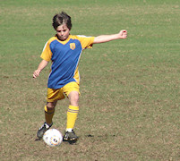
ball was spread about the park from one player to the next in a manner that
started to make the game of football look really, really easy. The Hawks were
soon on the back foot as the boys ran rampant through their defence and set up
camp in their half of the field, ultimately converting three of their goal-scoring
opportunities into points before the half-time whistle blew.
It is fair to say that the passing game in the second half was not quite as
polished as it had been in the first, but the Div One's also found themselves
up against an exceptional goal keeper who made some amazing saves throughout
the half and effectively kept the scoreline under control. Well done to her!
A few holes opened up in our otherwise tight play and we were forced to scramble
defensively on several occasions to keep the ball out of our nets. Yet despite
the increasing temperature of the day, and the heat of battle on the field itself,
our team maintained their composure and fitness and managed to score another two
goals before the final whistle blew.
The situation-awareness that is being fed to the team at training during the week
is clearly starting to pay off as they realise the simplicity of the passing game
and that each goal scored is a goal for the entire team, not just the scorer.
As well as they play, and they do play well, they are yet to realise how much more
they still have to offer. Well done team!
- Mark Howard
|
|
|
|
U11 Division 3
1 - 0
|
|
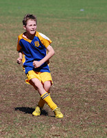
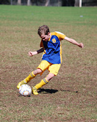
We were expecting a hard game and for the first ten minutes the Hills Hawks were
camped in our half of the field. Great goal keeping from Sam and desperate defence
kept the Hawks out.
A break away from a goal kick saw us finally attacking the Hawks’ goal. Anthony
was right in the middle of it and he was tripped, resulting in North Ryde being
awarded a penalty kick. Zac kicked it straight, but high above the Hawks’
goalkeepers head and right into the net. We had the best of the rest of the first
half, although our opposition also had some chances.
The second half saw each team spend long periods in front of the opposite goal,
but unable to score. Hamish and Matthew were solid in defence for North Ryde.
Everybody was counting down the minutes to the end of the game and it finally
came without another goal being scored.
Final score 1-0. Another solid team effort.
- Martin Borri
|
|
|
|
U11 Division 5
0 - 2
|
|
This week our game was at West Pennant Hills. The sun was shining and our boys
warmed up and our supporters gathered on the side line.
The boys played well from the start of the game. They showed their good defensive
skills holding out a few attempts of goals from the other team. Great team work
and some amazing saves from our goalie saw us at half time at nill all.
The second half we attacked the ball pushing it forward and had a couple of shots
on goal almost scoring. The boys tried very hard until the last whistle and almost
made a come back with some near misses towards the end of the game.
Josh was man of the match and deserved to be with his strong defence all through
the game. All our boys did a fantastic job unfortunately we lost 2-0. Next time
guys. Well played and great sportsmanship was displayed.
- Kim Harte
|
|
|
|
U15 Division 2
2 - 1
|
|
For the second game of the year, a very sunny day with an 11:15am start, the boys
played at Oakleigh Oval against Thornleigh Soccer Club, who were leading the GHFA
competition. We only had an 11 man squad and started the game with 9 players. We
played well and Mitch got tripped in the Thornleigh goal box which gave us the
penalty shot. Cameron lined up the ball and kicked it hard into the net, 1-0 to
North Ryde.
With the team up to full strength we continued to play well, Daniel soon scored
by kicking past the goal keeper, 2-0. Tom was having a good day as on the 50-50
challenges, he always ended up with the ball. Kevin was getting stuck into the
game, he had his best game with North Ryde, and Harry was getting more into the
play with Daniel up front. Lewis was in Goals and was doing a good job, ably
helped by Nat, Alex, Chris and Manav by clearing the balls away.
In second half the heat was making an impact on our players, and the Thornleigh
club were relentless in their attacks which tested the fitness of our players.
Manav was tested by Thornleigh no. 6 on many occasions. Eventually, Thornleigh
scored from an excellent cross that landed right at their striker’s feet and with
only a few meters in front of the goal there was nothing anyone could do. 2-1.
It was a great goal! Never the less, the North Ryde team kept up the effort, with
a couple of Cameron’s famous goal shoots from outside the goal box. An excellent
game and good result, well done boys!
The player of the match was Kevin Bordado and the trophy was presented by Paul
Uhrig. I would like to thank all the parents who come to support our team, you
do make a difference.
- Joe Rosenfels
|
|
|
|
All Age Division 17
2 - 2
|
|
Round 2 saw North Ryde take on Pennant Hills at home. Both teams started strongly
in wet conditions but it was North Ryde who began to get the upper hand gaining
good possession in the Pennant Hills half resulting in two goals leading up to
half time. As the rain worsened both teams found it difficult to control the ball
for any sustained period but just before half time Pennant Hills got a goal back
with a ball that squeezed under the North Ryde keeper.
The second half became as much a battle against conditions as Pennant Hills
however it was the visitors who were able to carry on their momentum into the
half and despite scrappy periods by both teams competing in the midfield Pennant
Hills scored the equaliser mid-way though the half. North Ryde were at times their
own worst enemies most notably managing to be short at the back after several
'unlimited substitutions' but after regaining their composure there were
opportunities for both sides towards the end before the ref blew it up at 2-2,
a fair result on balance.
New recruit Ross Andersen had an impressive debut but it was a much improved
North Ryde across the park for round two, something they can hopefully take
forward into the rest of the season.
- Simon
|